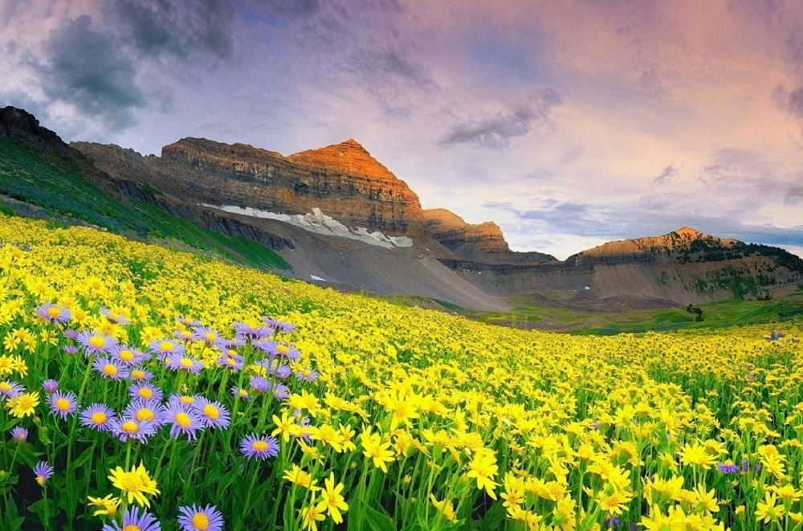

1st may, 2021
1. Nubra Valley in Ladakh
The barren rugged view of this valley, which lies between Kashmir and Tibet, will take
your breath away. You can feast your eyes on charming monasteries, the Nubra and Shyok rivers,
Bactrian camels, and sand dunes. A photographer’s delight, the valley is home to people of the Balti
culture in Turtuk.Best time to visit – June to AugustIdeal duration – 2 days
How to reach –
By Air: Kushok Bakula Rimpochee Airport in Leh is the nearest airport (162 km), from where you can
take a bus or taxi.
By Train: Or, you can travel by train to the Leh railway station from Jammu or Kashmir, and then
take a taxi or bus.
By Road: You can take a taxi from Leh to reach the valley (160 km away)

1st may, 2021
2. Khajjiar in Himachal Pradesh
Popularly known as Mini Switzerland, Khajjiar deserves your attention if you are looking
for places in India for honeymoon. The combination of lush green meadows, lofty Himalayas encased in
snow and dense forests make this place heavenly. Here, you can enjoy adventures like trekking,
zorbing, jungle safari and paragliding.
Best time to visit – March to October
Ideal duration – 2-3 days
How to reach –
By Air: You can fly to Kangra Airport (109 km from Khajjiar) and then take a taxi.
By Train: The closest station is Pathankot (96 km from Khajjiar), from where you can board a taxi.
By Road: You can take a taxi from Dalhousie or Chamba (24 km from Khajjiar).

1st may, 2021
3. Valley of Flowers in Uttarakhand
f you are in love with the vibrant colours of nature, this valley should feature on your
list of beautiful tourist places in India. Peppered with exotic and rare Himalayan flowers, it
attracts trekkers and photographers in droves. This national park is a UNESCO World Heritage Site
for good reason.
Best time to visit – July to September
Ideal duration – 1 day of stay, but the trek from Haridwar takes about 6 days
How to reach –
By Air: Jolly Grant Airport in Dehradun is at 284 km, from where you can hire a cab till Joshimath
(11 hours). Gobindghat is another hour from here. From Gobindghat, you have to trek for 13 km to
reach the Ghangaria base camp.
By Train: Rishikesh railway station is 273 km from Gobindghat, and you can take a taxi or bus from
the station.
By Road: You can get a bus or taxi from Rishikesh, Rudraprayag, Srinagar, Pauri, or Chamoli.